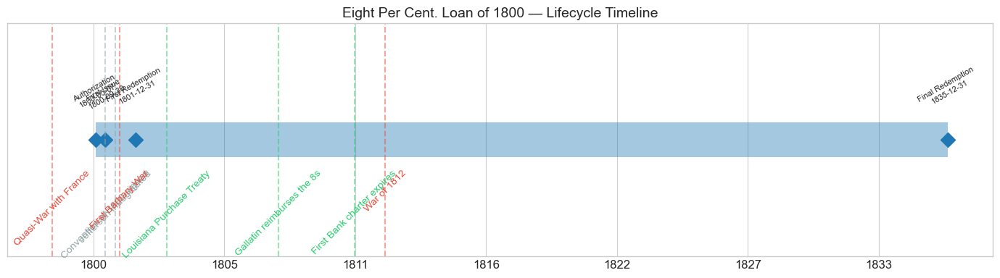
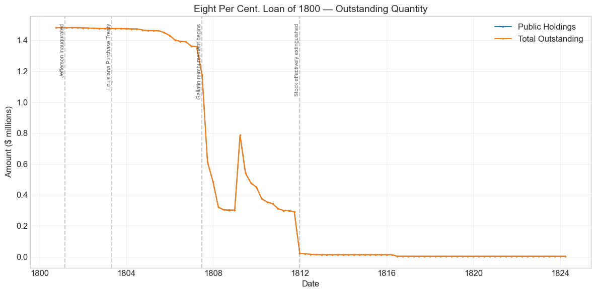
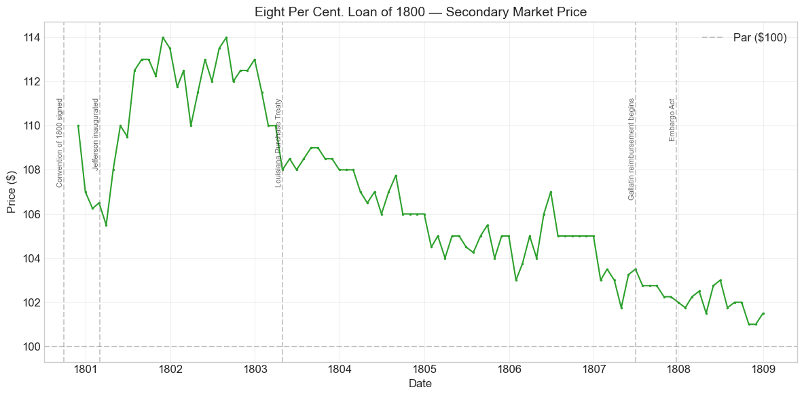
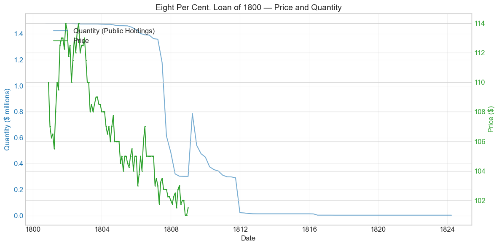
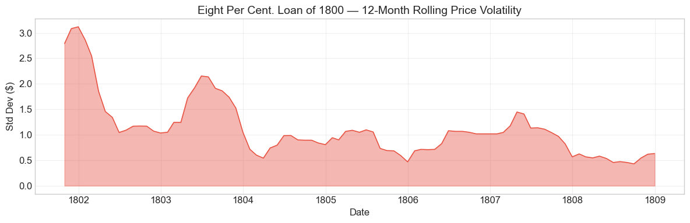
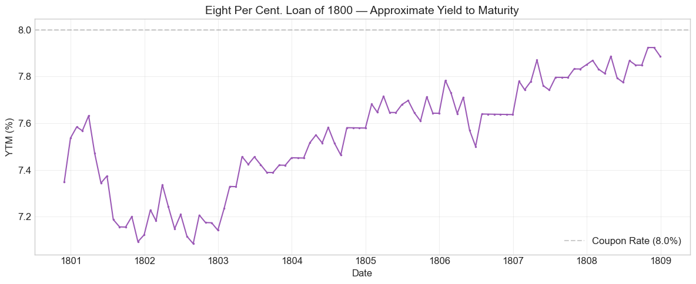

Bond Biography: Eight Per Cent. Loan of 1800#
The Price of Preparedness: Federalist Finance at Eight Per Cent#
An enhanced chapter from the Hall-Payne-Sargent US Federal Bond Database (2,857 issues, 1776–1960)
Bond ID (L1): 20043 | Category: Interest Bearing > Marketable > Long Term Bond
Data note. From November 1800 through December 1808 the database records the same monthly price for this loan and for the Eight Per Cent. Loan of 1798 (ID 20042): all 98 overlapping months are identical. Comparisons between the two 8s over those years therefore carry no information about differences between them.
import pandas as pd
import numpy as np
import matplotlib.pyplot as plt
import matplotlib.patches as mpatches
import datetime
import warnings
warnings.filterwarnings('ignore')
plt.style.use('seaborn-v0_8-whitegrid')
plt.rcParams.update({'figure.figsize': (12, 6), 'font.size': 12,
'axes.titlesize': 14, 'axes.labelsize': 12})
# Load the bond database
store = pd.HDFStore('../data/BondDF.h5', mode='r')
BondList = store['BondList']
BondQuant = store['BondQuant']
BondPrice = store['BondPrice']
store.close()
BondQuant_T = BondQuant.transpose()
BondPrice_T = BondPrice.transpose()
bond_id = 20043
print(f'Loaded data for: Eight Per Cent. Loan of 1800 (ID: 20043)')
/Users/thomassargent/anaconda3/lib/python3.9/site-packages/pandas/core/arrays/masked.py:60: UserWarning: Pandas requires version '1.3.6' or newer of 'bottleneck' (version '1.3.5' currently installed).
from pandas.core import (
Loaded data for: Eight Per Cent. Loan of 1800 (ID: 20043)
A Loan Born of an Undeclared War#
In the spring of 1798, the dispatches of the XYZ Affair reached the American public: agents of the French foreign minister Talleyrand had demanded a bribe and a loan before they would even receive the American envoys sent to Paris to negotiate an end to French depredations on U.S. shipping. “Millions for defense, but not one cent for tribute” became the slogan of the hour. Congress, in a burst of Federalist war fever, created the Department of the Navy (April 30, 1798), authorized the construction and purchase of warships, expanded the army, and abrogated the treaties of 1778 with France. The Quasi-War — an undeclared naval war fought in the Caribbean and the Atlantic between 1798 and 1800 — had begun.
Preparedness was expensive, and the Treasury’s ordinary revenues — overwhelmingly customs duties on the very ocean commerce the French were raiding — could not carry the new military establishment. Congress levied the republic’s first direct tax in July 1798 ($2 million apportioned on dwelling houses, lands, and slaves), a tax so resented that its assessment provoked Fries’s Rebellion in the German-speaking counties of eastern Pennsylvania in 1799. But taxes came in slowly; ships and regiments had to be paid for at once. The gap had to be borrowed.
The problem was the price of money. The government’s own funded 6% stocks of 1790 were trading well below par — the companion chapters on the Sixes and Threes of 1790 show the funded debt hitting its deepest post-1792 trough precisely in the summer of 1798, with the 6s in the 70s and low 80s. No investor would pay par for a new 6% loan when seasoned 6s could be had at a steep discount. If the Treasury wanted cash at par, it had to offer a coupon that matched what the market actually required. Under the act of July 16, 1798, Secretary of the Treasury Oliver Wolcott Jr. — Hamilton’s successor and faithful lieutenant — borrowed $5 million at eight per cent, the highest coupon rate the federal government had yet paid on a funded loan. When further needs arose, the act of May 7, 1800 authorized additional borrowing, and roughly $1.5 million more was taken at the same 8% coupon — the Eight Per Cent. Loan of 1800, Bond ID 20043 in our database.
Eight per cent scandalized contemporaries. To Republicans, led in fiscal matters by Albert Gallatin, the 8% loans were proof of everything wrong with Federalist finance: a war party that multiplied armies, navies, and taxes, and then paid usurious rates to the “moneyed interest” for the privilege. The “eight per cent loan” became a standing item in the Republican indictment during the election of 1800. Yet the loans did their work — and, in a final irony, it fell to Gallatin himself, as Jefferson’s Secretary of the Treasury, to pay them off ahead of nearly everything else in the government’s book. This chapter tells that story.
Why Eight Per Cent? The Price of Money in 1798–1800#
The 8% coupon was not profligacy; it was arithmetic. Three forces set the price:
1. The benchmark was broken. The natural reference asset, the funded 6% stock of 1790, sagged through the late 1790s as European war disrupted trade, as the Panic of 1796–97 tightened credit on both sides of the Atlantic, and as the French crisis raised the specter of full-scale war. With seasoned 6s obtainable in the secondary market at prices implying yields well above 7%, a new loan at 6% could only have been sold at a deep discount — which the Treasury, following the precedent of selling at or near par, was unwilling to do. The market’s required yield, not the Secretary’s preference, dictated the coupon.
2. Capital markets were thin. The United States in 1798 had a handful of banks, three small stock exchanges, and no standing machinery for distributing a large loan. The Dutch market, which had absorbed American loans in the 1780s and early 1790s, was closed — Amsterdam was under French domination, and borrowing there to fight France was out of the question. The loan had to be raised at home, from the merchants, banks, and insurance companies of the seaboard cities, in competition with private paper that commonly yielded more than the legal 6% ceiling on private contracts in many states.
3. War risk was real. Subscribers were being asked to lend to a government at the edge of war with the strongest military power in Europe, a government whose revenues depended on the seaborne trade that war would interrupt. The database shows the sibling Eight Per Cent. Loan of 1798 trading as low as $90 during 1799 — even an 8% coupon, that is, was at times barely enough.
By the time the 1800 tranche was sold, conditions had eased. Napoleon’s coup of 18 Brumaire (November 1799) brought to power a First Consul who wanted the American quarrel ended; negotiations were underway through 1800. The market noticed: the database records that the Loan of 1800 was sold not at par but at a premium of 5¾ per cent (a sale price of 105.75 per 100).[1]
Historical Context#
The following major events occurred during this bond’s lifetime:
Date |
Event |
Category |
|---|---|---|
1798-07-07 to 1800-09-30 |
Quasi-War with France |
War |
1800-09-30 |
Convention of 1800 (Mortefontaine) signed |
Diplomacy |
1801-03-04 |
Jefferson inaugurated; Gallatin to Treasury |
Politics |
1801-05-10 to 1805-06-10 |
First Barbary War |
War |
1803-04-30 |
Louisiana Purchase Treaty |
Legislation |
1803-12-20 |
Louisiana Territory transferred to US |
Other |
1807-12-22 |
Embargo Act |
Legislation |
1811-03-03 |
First Bank charter expires |
Legislation |
1812-06-18 to 1815-02-18 |
War of 1812 |
War |
1814-12-24 |
Treaty of Ghent (War of 1812 ends) |
Other |
1816-04-10 |
Second Bank of the US chartered |
Legislation |
1819-01-01 to 1821-12-31 |
Panic of 1819 |
Crisis |
The Quasi-War: the bond’s reason for being — and its ending#
The Eight Per Cent. Loan of 1800 has the odd distinction of being issued on almost the same day its war ended. The database records the first issue on September 30, 1800; the Convention of Mortefontaine, restoring peace between the United States and France, was signed at the end of that same month (the ceremonial signing is conventionally dated September 30, 1800; news took weeks to cross the Atlantic). The loan was thus subscribed while the naval war was still live, but its entire trading life unfolded in peacetime. The price series shows the consequence: the bond never traded below par. From its first quotation at $110 in November 1800 it climbed with the peace — and with the orderly transfer of power to Jefferson in March 1801 — to a peak of $114 in late 1801.
The First Barbary War: a non-event for the 8s#
The naval campaign against Tripoli (1801–1805) was fought by the very frigates the Quasi-War loans had helped pay for, but its fiscal footprint was modest — funded largely by the earmarked “Mediterranean Fund” duties — and it left no visible scar on the bond’s price, which drifted down its smooth premium-decay path throughout.
The War of 1812 and the Panic of 1819: a bond already gone#
By the time war with Britain came in June 1812, the Eight Per Cent. Loan of 1800 had essentially ceased to exist: Gallatin’s reimbursement program had extinguished all but a trivial residue of the stock by the end of 1811, and price quotations had already stopped in December 1808. The 8s therefore tell us nothing about wartime bond markets after 1812 — for that story, see the companion chapter on the Six Per Cent Loan of 1812 — but their absence is itself the point: Jefferson and Gallatin had deliberately cleared the government’s most expensive debt from the books before the next war arrived. The Panic of 1819 touched only the few thousand dollars of unclaimed certificates still sitting on the Treasury’s ledgers.
# Bond Lifecycle Timeline
fig, ax = plt.subplots(figsize=(14, 4))
# Key dates
dates = [('Authorization', '1800-05-07'), ('First Issue', '1800-09-30'), ('First Redemption', '1801-12-31'), ('Final Redemption', '1835-12-31')]
events = [('Quasi-War with France', '1798-07-07', 'war'), ('Convention of 1800 signed', '1800-09-30', 'other'), ('Jefferson inaugurated', '1801-03-04', 'other'), ('First Barbary War', '1801-05-10', 'war'), ('Louisiana Purchase Treaty', '1803-04-30', 'legislation'), ('Gallatin reimburses the 8s', '1808-01-01', 'legislation'), ('First Bank charter expires', '1811-03-03', 'legislation'), ('War of 1812', '1812-06-18', 'war')]
import matplotlib.dates as mdates
from datetime import datetime
# Plot bond lifetime bar
d0 = datetime.strptime(dates[0][1], '%Y-%m-%d')
d1 = datetime.strptime(dates[-1][1], '%Y-%m-%d')
ax.barh(0, (d1 - d0).days, left=mdates.date2num(d0), height=0.3,
color='#1f77b4', alpha=0.4, label='Bond Lifetime')
# Mark key dates
for label, date_str in dates:
d = datetime.strptime(date_str, '%Y-%m-%d')
ax.plot(mdates.date2num(d), 0, 'D', color='#1f77b4', markersize=10)
ax.annotate(f'{label}\n{date_str}', (mdates.date2num(d), 0.25),
ha='center', va='bottom', fontsize=8, rotation=30)
# Mark historical events
colors = {'war': '#e74c3c', 'crisis': '#9b59b6', 'legislation': '#2ecc71', 'other': '#95a5a6', 'monetary': '#f39c12'}
for name, date_str, cat in events:
d = datetime.strptime(date_str, '%Y-%m-%d')
ax.axvline(mdates.date2num(d), color=colors.get(cat, 'gray'), alpha=0.5, linestyle='--')
ax.annotate(name, (mdates.date2num(d), -0.25), ha='center', va='top',
fontsize=10, rotation=45, color=colors.get(cat, 'gray'))
ax.set_yticks([])
ax.xaxis.set_major_formatter(mdates.DateFormatter('%Y'))
ax.set_title('Eight Per Cent. Loan of 1800 — Lifecycle Timeline')
ax.set_ylim(-1, 1)
plt.tight_layout()
plt.show()

Bond Features#
Feature |
Detail |
|---|---|
Name |
Eight Per Cent. Loan of 1800 |
Authorizing Act |
May 7, 1800 |
First Issue Date |
September 30, 1800 |
Term |
15 years |
First Redemption |
December 31, 1801 |
Final Redemption |
December 31, 1835 |
Coupon Rate |
8.0% per annum |
Payment Frequency |
Quarterly (4 times/year) |
Callable |
No |
Payable in Coin |
Yes |
Amount Issued |
≈$1.48 million recorded outstanding at peak |
Price Sold |
105.75 (a premium of 5¾ per cent) |
Two features deserve comment. The 8% quarterly coin coupon made this, with its 1798 sibling, the most generous security in the federal book — a full two points above the Hamilton 6s and nearly triple the coupon of the 3s. And the sale at a 5¾ per cent premium distinguishes the 1800 tranche from the 1798 loan, which had gone off at par in harder times: between the two sales, the market’s required yield on U.S. credit had fallen, and subscribers competed for the fat coupon. The “final redemption” date of 1835 recorded in the database reflects the long administrative tail of unclaimed certificates, not the economic life of the loan, which — as the quantity data below make plain — was effectively over by the end of 1811.
# Display full bond features from database
row = BondList.loc[20043]
display_cols = [
"Treasury's Name Of Issue", 'Authorizing Act', 'Term Of Loan',
'First Issue Date', 'First Redemption Date', 'Final Redemption Date',
'Coupon Rate', 'Coupons Per Year', 'Callable', 'Coin',
'Authorized Amount', 'Price Sold'
]
print('Bond Features from Database:')
print('=' * 55)
for col in display_cols:
if col in row.index:
print(f' {col:<30} {row[col]}')
Bond Features from Database:
=======================================================
Treasury's Name Of Issue Eight Per Cent. Loan of 1800
Authorizing Act May 7, 1800
Term Of Loan 15 years
First Issue Date 1800-09-30 00:00:00
First Redemption Date 1801-12-31 00:00:00
Final Redemption Date 1835-12-31 00:00:00
Coupon Rate 8.0
Coupons Per Year 4.0
Callable 0.0
Coin 1.0
Authorized Amount nan
Price Sold 1.0575
Bond Quantity Over Time#
The bond’s outstanding quantity peaked at $1.48 million on September 30, 1800 — the loan was fully placed at issue, with no gradual subscription phase. Quantity data span 1800-09-30 to 1824-03-31 (95 monthly observations).
# Bond quantity over time
fig, ax = plt.subplots(figsize=(12, 6))
for stype in ['Public Holdings', 'Total Outstanding']:
try:
s = BondQuant_T.loc[(20043, stype)]
s = s[s.notna()]
if len(s) > 0:
ax.plot(s.index, s.values / 1e6, marker='.', markersize=3, linewidth=1.5, label=stype)
except KeyError:
pass
ax.set_title('Eight Per Cent. Loan of 1800 — Outstanding Quantity')
ax.set_xlabel('Date')
ax.set_ylabel('Amount ($ millions)')
ax.legend()
ax.grid(True, alpha=0.3)
events = {'1801-03-04': 'Jefferson inaugurated', '1803-04-30': 'Louisiana Purchase Treaty', '1807-06-30': 'Gallatin reimbursement begins', '1811-12-31': 'Stock effectively extinguished'}
for date_str, label in events.items():
d = pd.Timestamp(date_str)
ax.axvline(d, color='gray', alpha=0.4, linestyle='--')
ax.text(d, ax.get_ylim()[1]*0.97, label, rotation=90, va='top', ha='right', fontsize=8, alpha=0.7)
plt.tight_layout()
plt.show()

Quantity Analysis#
The quantity series divides into four clean phases.
1. Full at birth (1800–1801). Unlike the funded stocks of 1790, which were created by exchange over years of subscription waves, the 8% loan was a cash loan: the whole $1,481,700 recorded in the database was on the books at the first observation. (Bayley (1881) gives the same $1,481,700 of stock, sold for $1,565,229 in cash; the larger cash figure is the premium.)
2. The slow trickle (1801–1806). From the end of 1801 the outstanding amount erodes by a few thousand dollars a quarter — from $1.48 million to $1.36 million over five years. These small reductions are consistent with sinking-fund operations and surrenders: under the debt-reduction framework Gallatin persuaded Congress to adopt in 1802, which pledged an annual appropriation of $7.3 million to interest and redemption of the public debt, the commissioners of the sinking fund retired debt as opportunity offered. A high-coupon stock trading at a premium was an expensive thing to buy in, however, so the early paydown was modest.
3. The great reimbursement (1807–1811). The decisive moves come in 1807–1808: the outstanding amount collapses from $1.36 million at the start of 1807 to about $0.3 million by mid-1808 — the Treasury’s reimbursement of the eight per cent stock, the centerpiece of Gallatin’s policy of retiring the government’s dearest debt at the earliest date the loan contracts allowed. Flush with customs revenue from the neutral-trade boom, the Treasury paid off the 8s of 1798 and 1800 in this window rather than let an 8% obligation run a day longer than necessary. A curious rebound appears in March 1809 (see the detected-events table below); the downward march then resumes, and in December 1811 the remaining stock is almost entirely extinguished, leaving about $22,000, and within months only a residue.
4. The unclaimed tail (1812–1824). From 1812 the series shows a nearly flat remnant — $13,600, then $3,300, then $3,100 — certificates whose holders had not yet presented them for payment. This administrative residue, not any live borrowing, is what stretches the bond’s paper existence toward the 1835 “final redemption” date in the database. The economic life of the loan ended with Gallatin’s reimbursement.
There was no refinancing into other instruments: unlike the old 6s, which were exchanged and converted into new stocks in 1807 and again in 1812, the 8s were simply paid off in cash. That was the point.
Secondary Market Prices#
Overall Statistics (1800-11-30 to 1808-12-31): Mean $106.62, Range $101.0–$114.0, Std Dev $3.69, 98 observations.
By Period:
Period |
Mean |
Std |
Min |
Max |
Obs |
|---|---|---|---|---|---|
Issue to First Redemption (1800-09 to 1801-12) |
$110.07 |
$3.00 |
$105.5 |
$114.0 |
14 |
First Redemption to Final Redemption (1801-12 to 1835-12) |
$106.14 |
$3.56 |
$101.0 |
$114.0 |
85 |
The price history of the Eight Per Cent. Loan of 1800 is short, quiet, and almost perfectly legible. The bond never once traded below par in 98 months of quotations — a distinction none of the Hamilton-era funded stocks can claim over a comparable span. Three movements organize the series:
The peace premium (1800–1802). First quoted at $110 in November 1800, the bond climbed as news of the Convention of Mortefontaine spread, as the crisis of the disputed 1800 election resolved into a peaceful transfer of power, and as it became clear that the Jefferson administration meant to honor the Federalists’ debts punctually. The price peaked at $114 in November 1801 and held near that level through 1802. At $114, an 8% coupon yields about 7% on a current basis — the market repricing U.S. credit downward toward peacetime rates.
The long decay (1803–1808). From 1803 the price glides down a gentle, remarkably smooth ramp: $108–110 in 1803–04, $104–105 in 1805, $103–105 in 1806, $101–103.5 in 1807–08. This is not deteriorating credit — it is premium amortization, the textbook behavior of a high-coupon bond approaching redemption at par. Every quarter that passed was one fewer 8% coupon left to collect, and once Gallatin’s intention to reimburse the stock at the earliest contractual date was understood, the market priced the bond as a short-dated claim converging to 100. The maximum “drawdown” of -11.4% recorded in the statistics (from the November 1801 peak to $101 in October 1808) is thus a drawdown in name only: a holder who bought at $114 collected $8 a year in coin while the premium melted — a perfectly respectable realized return.
The quiet exit (1808). Quotations cease in December 1808 at $101.50, with the bulk of the stock already reimbursed. The bond did not crash out of the market; it was paid out of it. Even the Embargo of December 1807, which battered the trade on which federal revenue depended, barely dented a security this close to its cash redemption — the 8s wobbled between $101 and $103 while longer-dated stocks bore the strain.
# Annotated price chart
fig, ax = plt.subplots(figsize=(12, 6))
s = BondPrice_T.loc[(20043, 'Average')]
s = pd.to_numeric(s, errors='coerce').dropna()
if len(s) > 0:
ax.plot(s.index, s.values, marker='.', markersize=3, linewidth=1.5, color='#2ca02c')
ax.axhline(100, color='black', alpha=0.2, linestyle='--', label='Par ($100)')
ax.set_title('Eight Per Cent. Loan of 1800 — Secondary Market Price')
ax.set_xlabel('Date')
ax.set_ylabel('Price ($)')
ax.legend()
ax.grid(True, alpha=0.3)
events = {'1800-09-30': 'Convention of 1800 signed', '1801-03-04': 'Jefferson inaugurated', '1803-04-30': 'Louisiana Purchase Treaty', '1807-06-30': 'Gallatin reimbursement begins', '1807-12-22': 'Embargo Act'}
for date_str, label in events.items():
d = pd.Timestamp(date_str)
ax.axvline(d, color='gray', alpha=0.4, linestyle='--')
ax.text(d, ax.get_ylim()[1]*0.97, label, rotation=90, va='top', ha='right', fontsize=8, alpha=0.7)
plt.tight_layout()
plt.show()

# Price and Quantity — dual-axis chart
fig, ax1 = plt.subplots(figsize=(12, 6))
# Quantity (left axis)
for stype in ['Public Holdings', 'Total Outstanding']:
try:
q = BondQuant_T.loc[(20043, stype)]
q = q[q.notna()]
if len(q) > 0:
ax1.plot(q.index, q.values / 1e6, color='#1f77b4', alpha=0.6, label=f'Quantity ({stype})')
break
except KeyError:
pass
ax1.set_xlabel('Date')
ax1.set_ylabel('Quantity ($ millions)', color='#1f77b4')
ax1.tick_params(axis='y', labelcolor='#1f77b4')
# Price (right axis)
ax2 = ax1.twinx()
p = BondPrice_T.loc[(20043, 'Average')]
p = pd.to_numeric(p, errors='coerce').dropna()
if len(p) > 0:
ax2.plot(p.index, p.values, color='#2ca02c', marker='.', markersize=2, label='Price')
ax2.set_ylabel('Price ($)', color='#2ca02c')
ax2.tick_params(axis='y', labelcolor='#2ca02c')
ax1.set_title('Eight Per Cent. Loan of 1800 — Price and Quantity')
ax1.grid(True, alpha=0.3)
fig.legend(loc='upper left', bbox_to_anchor=(0.1, 0.9))
plt.tight_layout()
plt.show()

Detected Price/Quantity Events#
The following significant movements were auto-detected, with causal analysis:
Date |
Type |
Change |
Explanation |
|---|---|---|---|
1807-09 |
quantity_decrease |
-48.0% |
The main reimbursement tranche. Gallatin’s Treasury, running large peacetime surpluses, paid off nearly half the remaining 8% stock in a single quarter — the heart of the program of retiring the government’s most expensive debt first. |
1807-12 |
quantity_decrease |
-20.7% |
Continuation of the reimbursement operation. |
1808-03 |
quantity_decrease |
-34.0% |
Further reimbursement; by mid-1808 only about $0.3 million remained on the books. |
1809-03 |
quantity_increase |
+160.4% |
Almost certainly a bookkeeping splice, not new borrowing — no 8% stock was issued in 1809. The jump (from ≈$0.30M to ≈$0.79M) most plausibly reflects re-registration on the Treasury’s ledgers of certificates whose holders had not yet presented them for the announced reimbursement, or a change in which accounts were consolidated into the reported total. |
1809-06 |
quantity_decrease |
-31.1% |
The paydown resumes as holders present certificates for reimbursement. |
1811-12 |
quantity_decrease |
-92.4% |
Final extinguishment of the live stock (to ≈$22,000). The nearest tagged event, the War of 1812, is six months in the future and not the cause — though the timing is fitting: Gallatin cleared the last of the 8s from the books on the eve of the war that would force him to borrow anew. |
1812-06 |
quantity_decrease |
-21.8% |
Residual redemptions on a trivially small base — large in percent, a few thousand dollars in fact. |
1816-06 |
quantity_decrease |
-74.4% |
Write-down of the unclaimed remnant (from ≈$12,900 to ≈$3,300). The proximity to the chartering of the Second Bank is a coincidence of dates, not a causal link. |
No significant price events were auto-detected — itself a telling fact. Over eight years the largest monthly price move in either direction was under 3%. Where individual months show small unexplained wiggles, the likeliest culprit is the thinness of quotations: a $1.5 million issue concentrated in few hands generated sparse trading, and a single transaction could move the recorded monthly average by a fraction of a dollar.
Price Volatility#
Maximum drawdown: -11.4% (from the peak of November 30, 1801 to the final quotations of October 1808)
Average monthly return: -0.078%
Both statistics require careful reading. The “drawdown” is the scheduled melting of a redemption-bound premium, not a loss of confidence; and the negative average monthly price return is precisely what a par-redeemed premium bond must show — the holder’s compensation arrived through the 8% coin coupon, not through price appreciation. The rolling volatility chart below confirms the impression of serenity: after the modest repricing around the peace and the change of administrations in 1801–02, twelve-month volatility settles near $1 and stays there. Compared with its 1790 cousins — whose lives feature a 30% bubble, a 40% crash, and a wartime collapse — the Eight Per Cent. Loan of 1800 lived and died in almost perfect calm.
# Rolling volatility (12-month window)
p = BondPrice_T.loc[(20043, 'Average')]
p = pd.to_numeric(p, errors='coerce').dropna()
if len(p) >= 12:
rolling_std = p.rolling(window=12).std().dropna()
fig, ax = plt.subplots(figsize=(12, 4))
ax.fill_between(rolling_std.index, rolling_std.values, alpha=0.4, color='#e74c3c')
ax.plot(rolling_std.index, rolling_std.values, color='#e74c3c', linewidth=1)
ax.set_title('Eight Per Cent. Loan of 1800 — 12-Month Rolling Price Volatility')
ax.set_xlabel('Date')
ax.set_ylabel('Std Dev ($)')
ax.grid(True, alpha=0.3)
plt.tight_layout()
plt.show()
else:
print('Insufficient data for rolling volatility (need >= 12 observations)')

Approximate Yield to Maturity#
The calculation below follows the database convention of treating the recorded final redemption date (December 31, 1835) as the terminal date. For this bond that convention materially understates the true yield picture: the market did not expect the 8s to run to 1835, and they did not — the stock was reimbursed principally in 1807–1809. Amortizing the premium over three decades rather than over the few years the bond actually had left makes the computed YTM look implausibly close to the current yield.
The more meaningful reading is this: at the 1801–02 peak of $114, the current yield was about 7.0%; at the 1808 exit price of $101–102, an investor expecting reimbursement at par within a year or two was accepting a yield scarcely different from that on the 6% stocks. The premium’s decay was the market’s forecast of early redemption, and the forecast was correct. The chart is retained for comparability with the other chapters in this series, with that caveat firmly attached.
# Approximate Yield to Maturity
p = BondPrice_T.loc[(20043, 'Average')]
p = pd.to_numeric(p, errors='coerce').dropna()
final_redemption = pd.Timestamp('1835-12-31')
coupon_rate = 8.0
ytm_values = []
ytm_dates = []
for date, price in p.items():
years_left = (final_redemption - date).days / 365.25
if years_left > 0 and price > 0:
ytm = (coupon_rate + (100 - price) / years_left) / ((100 + price) / 2) * 100
ytm_values.append(ytm)
ytm_dates.append(date)
if ytm_values:
fig, ax = plt.subplots(figsize=(12, 5))
ax.plot(ytm_dates, ytm_values, color='#9b59b6', marker='.', markersize=3, linewidth=1.5)
ax.axhline(8.0, color='black', alpha=0.2, linestyle='--', label=f'Coupon Rate ({coupon_rate}%)')
ax.set_title('Eight Per Cent. Loan of 1800 — Approximate Yield to Maturity')
ax.set_xlabel('Date')
ax.set_ylabel('YTM (%)')
ax.legend()
ax.grid(True, alpha=0.3)
plt.tight_layout()
plt.show()
else:
print('Could not compute YTM')

Issuance, Distribution, and Redemption#
The bond was originally sold at 105.75 per $100 of face value — a premium of 5¾ per cent.
How it was sold. Like its 1798 predecessor, the Loan of 1800 was raised by subscription at home, under the direction of Secretary Wolcott and, after the change of administrations, administered by Gallatin’s Treasury. There was no foreign banking syndicate of the kind that would later distribute the Louisiana stock: Amsterdam was under French control and London was Britain’s war chest, so the subscribers were necessarily domestic — the banks, merchants, brokers, and insurance offices of Philadelphia, New York, Boston, and Baltimore that constituted the young republic’s investing class. Precise subscription lists for the 1800 tranche are not part of this database, and we refrain from guessing at individual names; what the premium price tells us is that, unlike in 1798, the Treasury in 1800 found buyers competing for the stock.
Mechanics. The stock carried its 8% interest quarterly, in coin, payable at the Treasury and transferable on the books in the manner established for the funded debt of 1790 — the book-entry infrastructure that made early U.S. federal securities unusually modern instruments for their era.
Redemption. The loan’s terms contemplated a fifteen-year term, but the government’s ability to reimburse became the operative fact. Gallatin’s debt program — the annual $7.3 million appropriation of 1802 and the sinking-fund machinery behind it — was built around retiring the dearest debt at the earliest contractual opportunity. Small sinking-fund reductions accumulated through 1806; the decisive reimbursement of the eight per cent stocks came principally in 1807–1809, financed out of the customs surpluses of the neutral-trade boom, with the last live remnant paid off by the end of 1811 and only a few thousand dollars of unclaimed certificates lingering on the books thereafter. There was no conversion or exchange into other securities: the 8s were extinguished with cash, which was precisely the political point — the visible destruction of the Federalists’ most expensive legacy.
Implications and Legacy#
The cost of preparedness, priced. The Eight Per Cent. Loan of 1800 is the cleanest surviving measure of what war risk and thin capital markets cost the early republic. In 1798–1800 the United States — a government that had never missed a coupon on its funded debt — had to pay eight per cent. British 3 per cent consols, the benchmark of a vastly deeper market, yielded about 5.9 per cent in 1798 and 4.7 per cent in 1800 (annual averages, Silberling 1919). The premium over the Hamilton 6s was the market’s bill for an undeclared war, an untested Treasury market, and the impossibility of borrowing abroad. Alexander Hamilton had preached that credit was a resource to be husbanded in peace so it could be spent in war; the 8% loans showed what happened when war arrived before the husbanding was complete.
A political weapon. Few securities have carried as much electoral freight per dollar of face value. The “eight per cent loans” gave Gallatin and the Republicans a concrete, quotable number with which to indict Federalist finance — armies, navies, stamp taxes, the direct tax, Fries’s Rebellion, and usurious borrowing, all of a piece. The critique helped win the election of 1800; and the redemption of the 8s then became the showpiece of the winners’ alternative program. Between 1801 and 1812 the Jefferson administration cut the federal debt from about $83 million to about $45 million, and the 8s went first. It is one of the neater symmetries of American fiscal history that the loan’s harshest critic became its punctual paymaster.
Creditworthiness, demonstrated in reverse. The Hamilton stocks proved the United States would service its debts; the 8s proved it would retire them — at par, early, and without haggling, even though the redeemed bondholders were largely the political enemies of the administration writing the checks. Jefferson and Gallatin never entertained repudiating or forcibly refinancing the Federalist war debt, and the price series records the market’s confidence: 98 months of quotations, never one below par. That performance was part of the capital-market reputation on which Gallatin could draw when he needed $11.25 million for Louisiana in 1803 — and which the Treasury would strain again after 1812.
A contrast in life cycles. Set beside its database neighbors, the 8% loan of 1800 shows how much variety hides inside “the early federal debt.” The 1790 trio were perpetual-style annuities born of a great restructuring, living for half a century through bubble, panic, and war. The 8s were something closer to a modern instrument: a cash loan, sold competitively at a market-clearing price, serviced quietly, and called in as soon as the issuer’s finances allowed. Their eight-year price series — a premium purchased at issue and amortized smoothly to par — is the least dramatic chart in this series, and that undrama is the achievement: it is what a government debt market looks like when it works.
References#
Primary Sources#
U.S. Congress, Act of July 16, 1798 (authorizing a loan of $5,000,000 — the Eight Per Cent. Loan of 1798) and Act of May 7, 1800 (authorizing the further borrowing under which the Eight Per Cent. Loan of 1800 was obtained).
Annual reports and loan accounts of the Secretary of the Treasury, Oliver Wolcott Jr. (1795–1800) and Albert Gallatin (1801–1814), in American State Papers: Finance, Vols. I–II — the contemporary record of the 8% loans’ issuance, servicing, and reimbursement.
Scholarly Works#
Bayley, R. A. (1881). The National Loans of the United States, From July 4, 1776 to June 30, 1880. Washington: Government Printing Office — the standard loan-by-loan compendium, including the terms and disposition of the 8% loans of 1798 and 1800.
Dewey, D. R. (1918). Financial History of the United States. New York: Longmans, Green and Co.
Silberling, N. J. (1919). “British Financial Experience, 1790–1830.” Review of Economic Statistics 1 (Supplement 2) — annual average prices and yields of British 3 per cent consols.
Studenski, P. & Krooss, H. E. (1952). Financial History of the United States. New York: McGraw-Hill.
Elkins, S. & McKitrick, E. (1993). The Age of Federalism: The Early American Republic, 1788–1800. New York: Oxford University Press — on the XYZ Affair, the Quasi-War, the direct tax, Fries’s Rebellion, and the politics of Federalist finance.
Perkins, E. (1994). American Public Finance and Financial Services, 1700–1815. Columbus: Ohio State University Press.
Edling, M. M. (2014). A Hercules in the Cradle: War, Money, and the American State, 1783–1867. Chicago: University of Chicago Press.
Hall, G. J. & Sargent, T. J. — companion work on the fiscal history of U.S. federal debt underlying this database.
Payne, J., Szőke, B., Hall, G. & Sargent, T. (2025). Quarterly Journal of Economics — the source database paper for this series.
Enhanced Bond Biography generated from the Hall-Payne-Sargent Bond Database. Narrative enrichment draws on Bayley (1881), Dewey (1918), Elkins & McKitrick (1993), and Edling (2014); statements about individual subscribers and precise reimbursement schedules are deliberately kept general where the surviving secondary literature is thin.